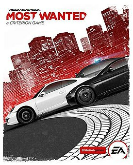

На цій сторінці я вам розкажу про свої улюблені ігри.
Need for Speed: Most Wanted — відеогра у жанрі перегони, 19-та гра серії Need for Speed, яка вийшла 30 жовтня 2012 року.[2] Розробником гри є британська компанія Criterion Games, а видавцем компанія Electronic Arts. Офіційний анонс відбувся 4 червня 2012 року під час прес-конференції EA на E3 2012. У грі відсутні суворі правила; гравець може довільно вибирати гонки для участі. Також в Most Wanted потрібно уникати зустрічі з поліцією, вони зроблять усе, що в їхніх силах, для упіймання гравця. Завдяки Autolog гравці зможуть змагатися зі своїми друзями по шляху до лідерства в списку Most Wanted.
